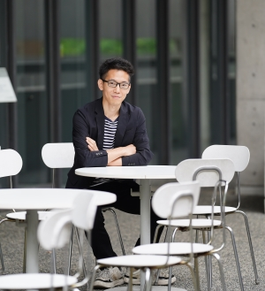

Motoshige Sato佐藤 元重
佐藤 元重 · Ph.D. in Pharmaceutical SciencesMotoshige Sato · 薬科学博士
I work on intelligence augmentation through the fusion of brains and artificial intelligence. I am a Postdoctoral Scholar in the Chang Lab at UCSF, working on Brain–Computer Interfaces for speech. Previously I led large-scale, non-invasive speech decoding from EEG at Araya Inc.
私は脳と人工知能の融合による知能拡張に興味があり、現在UCSF Chang LabのPostdoctoral Scholarとして、発話のためのBrain–Computer Interfaceの研究に取り組んでいます。以前は株式会社アラヤで、大規模データを用いた非侵襲脳波からの音声デコーディングを推進していました。

About概要
Brain–Computer Interfaces. Speech neuroprosthetics, non-invasive speech decoding from EEG, scaling laws in neural data, and the physiological origins of decodable signals.
Brain–Computer Interface：発話神経補綴、脳波からの非侵襲音声デコーディング、神経データにおけるスケーリング則、デコード可能な信号の生理学的起源。
Pharmaceutical sciences & neurophysiology. Ph.D. from the University of Tokyo — in vivo electrophysiology in rodents, combined with deep learning.
薬科学・神経生理学：東京大学で博士号を取得。げっ歯類のin vivo電気生理と深層学習を組み合わせた研究に従事。
Former President of the Brain Science Young Researchers' Association, organising schools and workshops for early-career neuroscientists.
元会長：脳科学若手の会。若手研究者向けの研究会・ワークショップを企画・運営。
Career経歴
- 2026.09 — Postdoctoral Scholar, Chang Lab, University of California, San Francisco Postdoctoral Scholar、UCSF Chang Lab（カリフォルニア大学サンフランシスコ校）
- 2025.09 — 2026.08 Visiting Scholar, Chang Lab, University of California, San Francisco Visiting Scholar、UCSF Chang Lab
- 2023.04 — 2025.08 Senior Researcher, Araya Inc. Senior Researcher、株式会社アラヤ
- 2021.10 — 2022.03 Visiting Researcher, Araya Inc. 客員研究員、株式会社アラヤ
- 2021.05 — 2021.10 Research Internship, Araya Inc. インターンシップ、株式会社アラヤ
- 2023.03 Ph.D. in Pharmaceutical Sciences, Graduate School of Pharmaceutical Sciences, The University of Tokyo 博士課程 修了、東京大学大学院薬学系研究科 薬科学専攻
- 2020.03 M.S., Graduate School of Pharmaceutical Sciences, The University of Tokyo 修士課程 修了、東京大学大学院薬学系研究科 薬科学専攻
- 2018.03 B.S., Faculty of Pharmaceutical Sciences, The University of Tokyo 卒業、東京大学薬学部 薬科学科
- 2014.04 Entered The University of Tokyo, College of Arts and Sciences (Natural Sciences II) 入学、東京大学教養学部 理科二類
Publications研究業績
Bold name = author太字は本人Journal articles & preprints学術雑誌等に発表した論文、著書
- Sato, M., Tomeoka, K., Horiguchi, I., Arulkumaran, K., Kanai, R., Sasai, S. Large-scale data practicalizes EEG-based speech decoding. In: Guger, C., Allison, B.Z., Lotte, F., Korostenskaja, M. (eds.) Brain-Computer Interface Research: A State-of-the-Art Summary 13, SpringerBriefs in Electrical and Computer Engineering, 123–129, Springer, 2026. linkBCI Award 2024 nomineeBCI Award 2024 ノミネート
- Sato, M., Horiguchi, I., Inoue, M., Tomeoka, K., Hatakeyama, E., Kita, Y., Yamamoto, A., Fujisawa, I., Sasai, S. A 1000-hour EEG-EMG-audio dataset of Japanese speech production. arXiv preprint arXiv:2606.01264, 2026. link
- Inoue, M., Sato, M., Tomeoka, K., Nah, N., Hatakeyama, E., Arulkumaran, K., Horiguchi, I., Sasai, S. A silent speech decoding system from EEG and EMG with heterogenous electrode configurations. Interspeech 2025, 5603–5607, 2025. linkpress解説記事
- Sato, M., Tomeoka, K., Horiguchi, I., Arulkumaran, K., Kanai, R., Sasai, S. Scaling law in neural data: non-invasive speech decoding with 175 hours of EEG data. arXiv preprint arXiv:2407.07595, 2024. linkpress解説記事
- Arulkumaran, K., Di Vincenzo, M., Dossa, R.F.J., Akiyama, S., Lillrank, D.O., Sato, M., Tomeoka, K., Sasai, S. A comparison of visual and auditory EEG interfaces for robot multi-stage task control. Frontiers in Robotics and AI, 11, 1329270, 2024. linkpress解説記事
- Sato, M., Kabe, Y., Nobe, S., Yoshida, A., Inoue, M., Simizu, M., Tomeoka, K., Sasai, S. Delineating neural contributions to electroencephalogram-based speech decoding. bioRxiv 2024.05.09.591996, 2024. linkpress解説記事
- Ogasawara, J., Ikenoue, S., Yamamoto, H., Sato, M., Kasuga, Y., Mitsukura, Y., Ikegaya, Y., Yasui, M., Tanaka, M., Ochiai, D. Deep neural network-based classification of cardiotocograms outperformed conventional algorithms. Scientific Reports, 11, 13367, 2021. link
- Sato, M., Noguchi, A., Gao, M., Ouchi, A., Ikegaya, Y. Amplitude estimation of synaptic inputs using deep learning. IEICE Technical Report, 118(414), 17–21, 2019. in Japanese佐藤元重、野口朝子、高夢璇、大内彩子、池谷裕二、深層学習を用いたシナプス入力の振幅推定、電子情報通信学会技術研究報告、118(414), 17–21, 2019. link
- Sato, M., Matsumoto, N., Noguchi, A., Okonogi, T., Sasaki, T., Ikegaya, Y. Simultaneous monitoring of mouse respiratory and cardiac rates through a single precordial electrode. Journal of Pharmacological Sciences, 137, 177–186, 2018. link
Reviews & society reports学術雑誌における総説
- Sato, M., Sakamoto, T., Ishibashi, K., Kobayashi, K., Sato, Y., Shimanuki, Y., Sugimoto, S., Sugita, Y., Noyama, H., Yamashita, A. Report on the 14th Spring Meeting of the Brain Science Young Researchers' Association. The Brain & Neural Networks (JNNS), 29(2), 95–101, 2022. in Japanese佐藤元重、坂本嵩、石橋佳奈、小林憲司、佐藤由宇、嶋貫悠、杉本翔哉、杉田祐輔、野山大樹、山下愛博、2022年度時限研究会実施報告 脳科学若手の会第14回 春の研究会、日本神経回路学会誌、29(2), 95–101, 2022. link
- Kobayashi, K., Sakamoto, T., Sato, M., Sato, Y., Sugimoto, S., Nakata, Y., Noyama, H., Yamashita, A. Report on the 13th Spring Meeting of the Brain Science Young Researchers' Association. The Brain & Neural Networks (JNNS), 28(2), 103–108, 2021. in Japanese小林憲司、坂本嵩、佐藤元重、佐藤由宇、杉本翔哉、中田康史、野山大樹、山下愛博、2021年度時限研究会実施報告 脳科学若手の会第13回 春の研究会、日本神経回路学会誌、28(2), 103–108, 2021. link
- Kawabata, M., Koyama, Y., Sakamoto, T., Sato, M., Sato, Y., Takagi, S., Nagano, Y., Misu, H., Yagi, S., Yamashita, A. Report on the 11th Camp of the Brain Science Young Researchers' Association. The Brain & Neural Networks (JNNS), 26(3), 105–109, 2019. in Japanese川端政則、小山雄太郎、坂本嵩、佐藤元重、佐藤由宇、高木志郎、長野祥大、三須宏武、八木佐一郎、山下愛博、2019年度時限研究会実施報告 脳科学若手の会第11回合宿、日本神経回路学会誌、26(3), 105–109, 2019. link
- Gao, M., Sato, M., Ikegaya, Y. Machine learning-based prediction of seizure-inducing action as an adverse drug effect. Yakugaku Zasshi, 138, 809–813, 2018.
Conference presentations学会発表
International conferences国際会議における発表
- Sato, M., Tomeoka, K., Horiguchi, I., Arulkumaran, K., Kanai, R., Sasai, S. Data-driven scaling performance in EEG-based speech decoding. 11th International BCI Meeting 2025, Canada, W21.Oral口頭発表
- Komatsu, M., Sato, M., Yoshida, A., Tsunada, J., Sasai, S. The whole-cortical ECoG reveals association cortices contribute multimodal intentional decoding. 10th International BCI Meeting 2023, Belgium, 144487, June 2023.Oral (co-author)口頭発表（共著）
- Sato, M., Matsumoto, N., Ikegaya, Y. Decoding the language of speech from neural activity of rats. International Symposium on Artificial Intelligence and Brain Science, Tokyo, e100, October 2020.Posterポスター
- Ouchi, A., Sato, M., Ikegaya, Y. Hilar mossy cells encode hippocampal ripple information. Society for Neuroscience 2019, Chicago, 086.01, October 2019.Posterポスター
- Sato, M., Matsumoto, N., Ikegaya, Y. Do rat brains discriminate Spanish and English languages? Society for Neuroscience 2019, Chicago, 4042, October 2019.Posterポスター
- Sato, M., Noguchi, A., Gao, M., Ouchi, A., Ikegaya, Y. Classification and regression of in vivo synaptic inputs using deep neural network. The 5th CiNet Conference, Osaka, 11, February 2019.Posterポスター
- Sato, M., Matsumoto, N., Noguchi, A., Okonogi, T., Sasaki, T., Ikegaya, Y. Simultaneous monitoring of intact respiratory signals and membrane potentials of CA1 pyramidal neurons in mice. Society for Neuroscience 2018, San Diego, 520.16, November 2018.Posterポスター
- Sato, M., Matsumoto, N., Noguchi, A., Okonogi, T., Sasaki, T., Ikegaya, Y. A simple method for simultaneous monitoring of respiratory and cardiac function in mice. 18th World Congress of Basic and Clinical Pharmacology, Kyoto, PO4-1-146, July 2018.Posterポスター
Domestic conferences & symposia国内学会・シンポジウムにおける発表
- Yoshida, A., Komatsu, M., Sato, M., Sasai, S., Kanai, R. Millisecond-scale dynamic brain networks of whole-cortical ECoG in marmosets. 46th Annual Meeting of the Japan Neuroscience Society, Sendai, C001212, August 2023.吉田暁人、小松三佐子、佐藤元重、笹井俊太朗、金井良太、Millisecond-scale dynamic brain networks of whole-cortical ECoG in marmosets、第46回日本神経科学大会（仙台）、2023年8月、C001212Posterポスター
- Sato, M., Matsumoto, N., Ikegaya, Y. Effects of brain–AI co-learning on difficult tasks. 143rd Annual Meeting of the Pharmaceutical Society of Japan, Sapporo, 26F2-pm13S, March 2023.佐藤元重、松本信圭、池谷裕二、困難課題に対する脳-AI共学習の効果、日本薬学会第143年会（札幌）、2023年3月26日、26F2-pm13SOral口頭発表
- Sato, M., Komatsu, M., Sasai, S. Brain mapping of contributions to vocal and behavioral decoding. 45th Annual Meeting of the Japan Neuroscience Society, Okinawa, C001272, June–July 2022.佐藤元重、小松三佐子、笹井俊太朗、Brain mapping of contributions to vocal and behavioral decoding、第45回日本神経科学大会（沖縄）、2022年6–7月、C001272Posterポスター
- Sato, M., Matsumoto, N., Ikegaya, Y. Augmentation of auditory discrimination through brain–AI fusion. 2nd Meeting of “Chronogenesis”, online, February 2022.佐藤元重、松本信圭、池谷裕二、脳-AI融合による聴覚弁別能力の拡張、「時間生成学」第二回領域会議（オンライン）、2022年2月Best Poster Awardポスター発表優秀賞
- Sato, M., Matsumoto, N., Ikegaya, Y. Toward augmentation of brain function through brain–AI co-learning. 44th Annual Meeting of the Japan Neuroscience Society, Kobe, C001019, July 2021.佐藤元重、松本信圭、池谷裕二、Toward augmentation of brain function through brain-AI co-learning、第44回日本神経科学大会（神戸）、2021年7月、C001019Posterポスター
- Sato, M., Matsumoto, N., Ikegaya, Y. Decoding human speech from rat neural activity. 140th Annual Meeting of the Pharmaceutical Society of Japan, Kyoto, 27K-am01S, March 2020.佐藤元重、松本信圭、池谷裕二、ラット神経活動からの人間の音声言語の復号化、日本薬学会第140年会（京都）、2020年3月28日、27K-am01SOral口頭発表
- Ouchi, A., Sato, M., Ikegaya, Y. Reverse-propagating information dynamics in the hippocampal dentate gyrus local circuit. 93rd Annual Meeting of the Japanese Pharmacological Society, Yokohama, 1-SS-52 / 1-P-012, March 2020.大内彩子、佐藤元重、池谷裕二、海馬歯状回局所回路をリバースに伝播する脳情報動態の解明、第93回日本薬理学会年会（横浜）、2020年3月16日、1-SS-52 / 1-P-012Oral + Poster口頭・ポスター
- Shibata, Y., Sato, M., Matsumoto, N., Ikegaya, Y. Influence on decoding accuracy of EEG in denoised EMG using machine learning. 93rd Annual Meeting of the Japanese Pharmacological Society, Yokohama, 1-P-135, March 2020.柴田裕介、佐藤元重、松本信圭、池谷裕二、Influence on decoding accuracy of EEG in denoised EMG using machine learning、第93回日本薬理学会年会（横浜）、2020年3月16日、1-P-135Posterポスター
- Sato, M., Matsumoto, N., Ikegaya, Y. Neural decoding of correct answers in indiscriminable auditory tasks. 42nd Annual Meeting of the Japan Neuroscience Society, Niigata, PA-L-552, July 2019.佐藤元重、松本信圭、池谷裕二、弁別不可能な聴覚課題における正解の神経デコーディング、第42回日本神経科学大会（新潟）、2019年7月26日、PA-L-552Posterポスター
- Sato, M., Noguchi, A., Gao, M., Ouchi, A., Ikegaya, Y. Amplitude estimation of neuronal depolarisation using deep learning. 92nd Annual Meeting of the Japanese Pharmacological Society, Osaka, March 2019.佐藤元重、野口朝子、高夢璇、大内彩子、池谷裕二、深層学習を用いた神経細胞脱分極の振幅推定、第92回日本薬理学会年会（大阪）、2019年3月Oral口頭発表
- Sato, M., Noguchi, A., Gao, M., Ouchi, A., Ikegaya, Y. Classification and regression of in vivo membrane potentials using deep learning. 2nd Meeting of “Chronogenesis”, Ehime, February 2019.佐藤元重、野口朝子、高夢璇、大内彩子、池谷裕二、深層学習によるin vivo神経膜電位の分類・回帰、「時間生成学」第二回領域会議（愛媛）、2019年2月Poster Encouragement Awardポスター発表奨励賞
- Sato, M., Noguchi, A., Gao, M., Ouchi, A., Ikegaya, Y. Amplitude estimation of synaptic inputs using deep learning. IEICE Neurocomputing Workshop, Hokkaido, 16(NC), January 2019.佐藤元重、野口朝子、高夢璇、大内彩子、池谷裕二、深層学習を用いたシナプス入力の振幅推定、ニューロコンピューティング研究会（北海道）、2019年1月、16(NC)Oral口頭発表
- Sato, M., Noguchi, A., Gao, M., Ouchi, A., Ikegaya, Y. Depolarisation analysis of in vivo membrane potential data from hippocampal CA1 neurons using deep learning. 27th Meeting of the Japanese Society for Hippocampal Research, Tokyo, P10, September 2018.佐藤元重、野口朝子、高夢璇、大内彩子、池谷裕二、深層学習による海馬CA1野ニューロンin vivo膜電位データの脱分極解析、第27回海馬と高次脳機能学会（東京）、2018年9月、P10Posterポスター
- Sato, M., Matsumoto, N., Noguchi, A., Okonogi, T., Sasaki, T., Ikegaya, Y. Simultaneous monitoring of cardiac and respiratory signals with patch-clamp recordings from mouse brains. 41st Annual Meeting of the Japan Neuroscience Society, Kobe, P-079, July 2018.佐藤元重、松本信圭、野口朝子、小此木闘也、佐々木拓哉、池谷裕二、Simultaneous monitoring of cardiac and respiratory signals with patch-clamp recordings from mouse brains、第41回日本神経科学大会（神戸）、2018年7月、P-079Posterポスター
- Sato, M., Matsumoto, N., Noguchi, A., Okonogi, T., Sasaki, T., Ikegaya, Y. A simple method to monitor cardiac and respiratory signals with neurophysiological recording. Frontiers of Neurointelligence — JNS 2018 Satellite Symposium, Tokyo, 3, July 2018.佐藤元重、松本信圭、野口朝子、小此木闘也、佐々木拓哉、池谷裕二、A simple method to monitor cardiac and respiratory signals with neurophysiological recording、Frontiers of Neurointelligence（第41回日本神経科学大会サテライトシンポジウム）（東京）、2018年7月、3Posterポスター
- Sato, M., Matsumoto, N., Ikegaya, Y. Respiratory rhythms hidden in the electrocardiogram. 137th Kanto Branch Meeting of the Japanese Pharmacological Society, Tokyo, O10-2 (YIA), October 2017.佐藤元重、松本信圭、池谷裕二、心電図に潜む呼吸リズム、第137回日本薬理学会関東部会（東京）、2017年10月、O10-2 (YIA)Oral口頭発表
Awards & funding受賞歴・競争的資金
Awards受賞歴
- 2024.10Nominated among the top 12 projects at the BCI Awards 2024 — Large-scale data practicalizes EEG-based speech decoding (Sato, M., Tomeoka, K., Horiguchi, I., Arulkumaran, K., Kanai, R., Sasai, S.)BCI Awards 2024にてトップ12研究にノミネート — Large-scale data practicalizes EEG-based speech decoding（Sato, M., Tomeoka, K., Horiguchi, I., Arulkumaran, K., Kanai, R., Sasai, S.）
- 2022.02Best Poster Award, 2nd Meeting of “Chronogenesis”ポスター発表優秀賞、「時間生成学」第二回領域会議
- 2019.02Poster Encouragement Award, “Chronogenesis” area meetingポスター発表奨励賞、「時間生成学」領域会議
Competitive funding & fellowships競争的資金の獲得実績
- 2020.04 — 2023.03JSPS Research Fellowship for Young Scientists (DC1) — ¥200,000 / month日本学術振興会特別研究員DC1に採択（20万円/月）
- 2019.10 — 2023.03Nakatani Foundation graduate scholarship — ¥100,000/month (M.S.), ¥150,000/month (Ph.D.)中谷医工計測技術振興財団 大学院生奨学金に採択（修士：10万円/月、博士：15万円/月）
- 2019.04 — 2022.03Toyota–Dwango Advanced AI Talent Scholarship — ¥100,000 / monthトヨタ・ドワンゴ高度人工知能人材奨学金（10万円/月）
- —JASSO scholarship — full repayment exemption (¥2,112,000)日本学生支援機構 奨学金 全額返還免除（2,112,000円）
Outreach & training対外活動
- 2023.10Completed Matsuo Lab Summer School 2023 — Large Language Models松尾研究室サマースクール2023「大規模言語モデル」を修了
- 2022.03Completed Matsuo Lab Spring Seminar — World Models (project: multimodal active inference implementation)松尾研究室スプリングセミナー「世界モデル」を修了（成果物：マルチモーダル能動推論の実装）
- 2021.03Organised the 13th Spring Meeting of the Brain Science Young Researchers' Association and wrote a tutorial comparing hierarchical structure in brains and machine learning. Activity report published in the JNNS journal (link)第13回脳科学若手の会 春の研究会を主催し、脳と機械学習の階層性を生理学的に比較するチュートリアルを作成。神経回路学会誌に活動報告を寄稿(link)
- 2021.03Completed Matsuo Lab Spring Seminar — Reinforcement Learning (project: simulation for control of neural circuit stimulation)松尾研究室スプリングセミナー「強化学習」を修了（成果物：神経回路刺激の制御のためのシミュレーション）
- 2020.04Appointed President of the Brain Science Young Researchers' Association脳科学若手の会 会長に就任
- 2020.03Attended Matsuo Lab Spring Seminar — Deep Generative Models松尾研究室スプリングセミナー「深層生成モデル」を受講
- 2019.11Tutor at ASCONE 2019 “The Future of Brain Science and Mathematics”, JNNS Autumn School日本神経回路学会オータムスクール ASCONE2019『脳科学と数理の未来』にチューターとして参加
- 2019.07Passed JDLA Deep Learning for GENERAL 2019#2 (G-test)JDLA Deep Learning for GENERAL 2019#2（ディープラーニング G検定）合格
- 2019.06Joined KERNEL HONGO, an AI-focused incubation hubAI特化型インキュベーション拠点KERNEL HONGOに入会
- 2019.03Ran the 11th Camp of the Brain Science Young Researchers' Association; activity report published in the JNNS journal (link)脳科学若手の会第11回合宿を運営。神経回路学会誌に活動報告を寄稿(link)
- 2018.06Participated in the Tamagawa University Brain Science Training Course 2018玉川大学脳科学トレーニングコース2018に参加
- 2018.01 — 03Member of the first cohort of Niconico AI SchoolニコニコAIスクールの第一期生として参加
- 2016.08Short-term study abroad at the University of Sheffieldシェフィールド大学へ短期留学